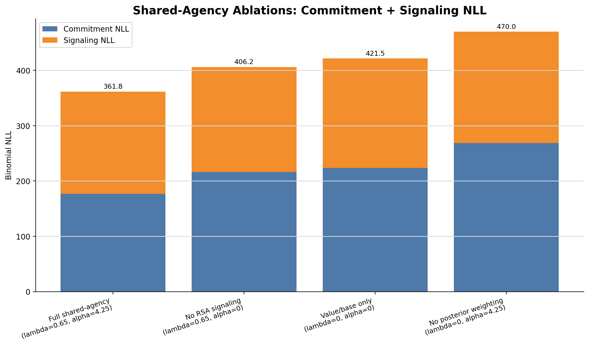
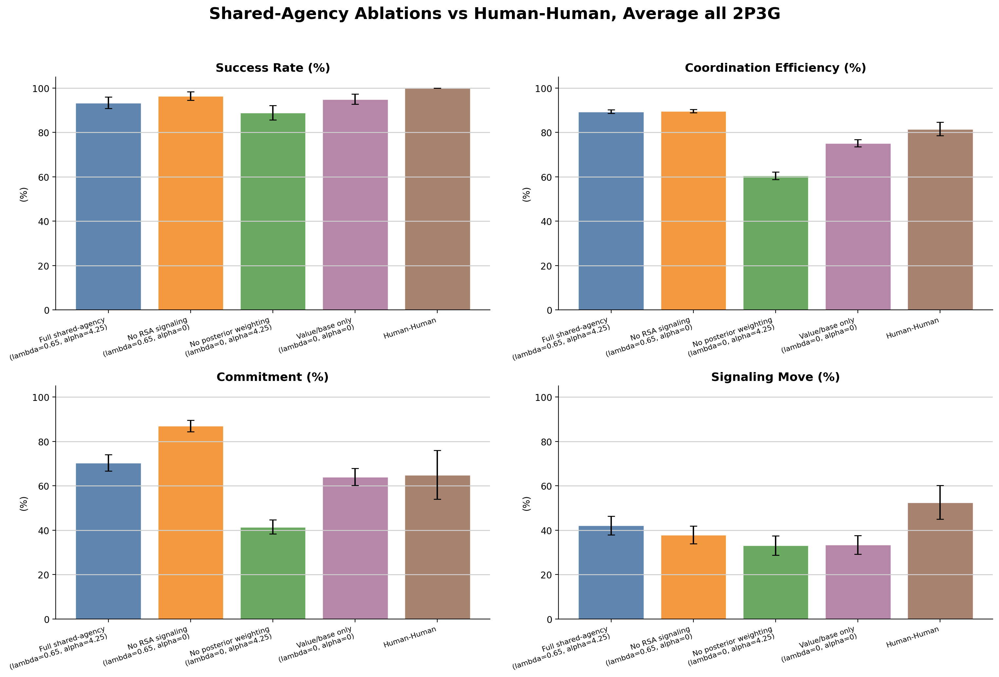
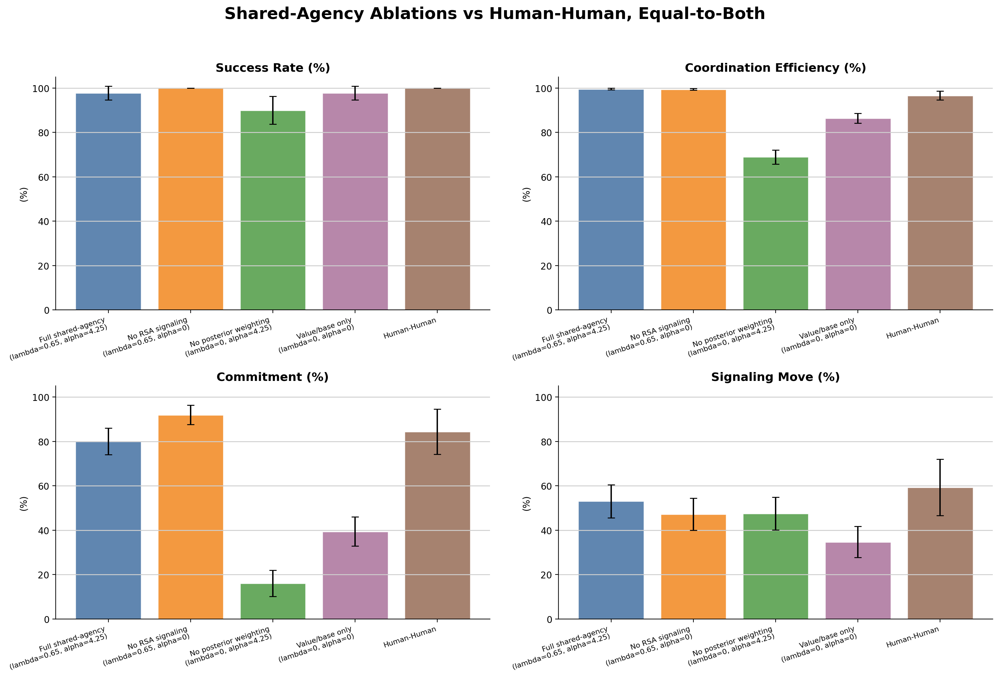

Models compared
4
Best NLL row
Full shared-agency
(lambda=0.65, alpha=4.25)
Best lambda
0.65
Best alpha
4.25
Artifacts
summary CSV NLL CSV long metric CSV raw sources CSV notebook full heatmap report current communicative action mixture trial report current communicative action mixture step-level report shared-agency baseline comparison
NLL Comparison

| label | lambda | alpha | commitment_nll | signaling_nll | binomial_nll | raw_source |
|---|---|---|---|---|---|---|
| Full shared-agency (lambda=0.65, alpha=4.25) | 0.65 | 4.25 | 176.90 | 184.85 | 361.75 | reused legacy RSA best raw |
| No RSA signaling (lambda=0.65, alpha=0) | 0.65 | 0 | 216.47 | 189.70 | 406.18 | rerun ablation raw |
| Value/base only (lambda=0, alpha=0) | 0 | 0 | 223.50 | 197.98 | 421.48 | rerun ablation raw |
| No posterior weighting (lambda=0, alpha=4.25) | 0 | 4.25 | 268.82 | 201.18 | 469.99 | rerun ablation raw |
Metric Comparison
Average all 2P3G
{kind=link}

Equal-to-both only
{kind=link}

Long Metric Table
| condition_scope | group | metric | mean_percent | ci95_percent | n |
|---|---|---|---|---|---|
| average_all_2p3g | Full shared-agency (lambda=0.65, alpha=4.25) | Success Rate (%) | 93.33 | 2.58 | 360 |
| average_all_2p3g | Full shared-agency (lambda=0.65, alpha=4.25) | Coordination Efficiency (%) | 89.40 | 0.86 | 60 |
| average_all_2p3g | Full shared-agency (lambda=0.65, alpha=4.25) | Commitment (%) | 70.40 | 3.69 | 60 |
| average_all_2p3g | Full shared-agency (lambda=0.65, alpha=4.25) | Signaling Move (%) | 42.14 | 4.20 | 60 |
| average_all_2p3g | No RSA signaling (lambda=0.65, alpha=0) | Success Rate (%) | 96.39 | 1.93 | 360 |
| average_all_2p3g | No RSA signaling (lambda=0.65, alpha=0) | Coordination Efficiency (%) | 89.61 | 0.77 | 60 |
| average_all_2p3g | No RSA signaling (lambda=0.65, alpha=0) | Commitment (%) | 87.04 | 2.57 | 60 |
| average_all_2p3g | No RSA signaling (lambda=0.65, alpha=0) | Signaling Move (%) | 37.92 | 3.95 | 60 |
| average_all_2p3g | No posterior weighting (lambda=0, alpha=4.25) | Success Rate (%) | 88.89 | 3.25 | 360 |
| average_all_2p3g | No posterior weighting (lambda=0, alpha=4.25) | Coordination Efficiency (%) | 60.49 | 1.74 | 60 |
| average_all_2p3g | No posterior weighting (lambda=0, alpha=4.25) | Commitment (%) | 41.48 | 3.15 | 60 |
| average_all_2p3g | No posterior weighting (lambda=0, alpha=4.25) | Signaling Move (%) | 33.13 | 4.34 | 60 |
| average_all_2p3g | Value/base only (lambda=0, alpha=0) | Success Rate (%) | 95.00 | 2.25 | 360 |
| average_all_2p3g | Value/base only (lambda=0, alpha=0) | Coordination Efficiency (%) | 75.19 | 1.65 | 60 |
| average_all_2p3g | Value/base only (lambda=0, alpha=0) | Commitment (%) | 64.04 | 3.83 | 60 |
| average_all_2p3g | Value/base only (lambda=0, alpha=0) | Signaling Move (%) | 33.42 | 4.18 | 60 |
| average_all_2p3g | Human-Human | Success Rate (%) | 100.00 | 0.00 | 189 |
| average_all_2p3g | Human-Human | Coordination Efficiency (%) | 81.58 | 3.01 | 32 |
| average_all_2p3g | Human-Human | Commitment (%) | 64.97 | 10.97 | 32 |
| average_all_2p3g | Human-Human | Signaling Move (%) | 52.53 | 7.60 | 32 |
| equal_to_both | Full shared-agency (lambda=0.65, alpha=4.25) | Success Rate (%) | 97.78 | 3.06 | 90 |
| equal_to_both | Full shared-agency (lambda=0.65, alpha=4.25) | Coordination Efficiency (%) | 99.57 | 0.37 | 60 |
| equal_to_both | Full shared-agency (lambda=0.65, alpha=4.25) | Commitment (%) | 80.00 | 6.00 | 60 |
| equal_to_both | Full shared-agency (lambda=0.65, alpha=4.25) | Signaling Move (%) | 53.06 | 7.43 | 60 |
| equal_to_both | No RSA signaling (lambda=0.65, alpha=0) | Success Rate (%) | 100.00 | 0.00 | 90 |
| equal_to_both | No RSA signaling (lambda=0.65, alpha=0) | Coordination Efficiency (%) | 99.43 | 0.40 | 60 |
| equal_to_both | No RSA signaling (lambda=0.65, alpha=0) | Commitment (%) | 91.94 | 4.36 | 60 |
| equal_to_both | No RSA signaling (lambda=0.65, alpha=0) | Signaling Move (%) | 47.22 | 7.25 | 60 |
| equal_to_both | No posterior weighting (lambda=0, alpha=4.25) | Success Rate (%) | 90.00 | 6.23 | 90 |
| equal_to_both | No posterior weighting (lambda=0, alpha=4.25) | Coordination Efficiency (%) | 68.95 | 3.18 | 60 |
| equal_to_both | No posterior weighting (lambda=0, alpha=4.25) | Commitment (%) | 16.11 | 5.91 | 60 |
| equal_to_both | No posterior weighting (lambda=0, alpha=4.25) | Signaling Move (%) | 47.50 | 7.40 | 60 |
| equal_to_both | Value/base only (lambda=0, alpha=0) | Success Rate (%) | 97.78 | 3.06 | 90 |
| equal_to_both | Value/base only (lambda=0, alpha=0) | Coordination Efficiency (%) | 86.42 | 2.23 | 60 |
| equal_to_both | Value/base only (lambda=0, alpha=0) | Commitment (%) | 39.44 | 6.63 | 60 |
| equal_to_both | Value/base only (lambda=0, alpha=0) | Signaling Move (%) | 34.72 | 6.96 | 60 |
| equal_to_both | Human-Human | Success Rate (%) | 100.00 | 0.00 | 47 |
| equal_to_both | Human-Human | Coordination Efficiency (%) | 96.64 | 1.94 | 32 |
| equal_to_both | Human-Human | Commitment (%) | 84.38 | 10.16 | 32 |
| equal_to_both | Human-Human | Signaling Move (%) | 59.38 | 12.70 | 32 |